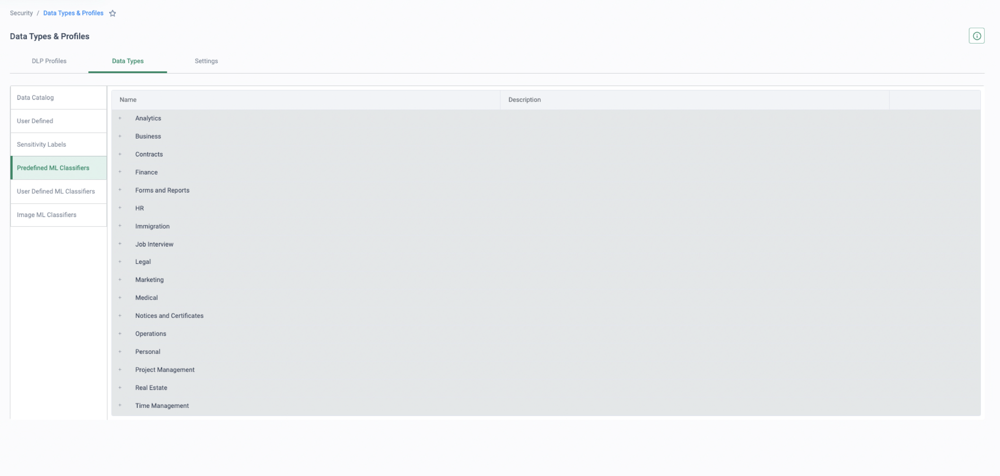

Policy translation is where migrations stall
This page is authored from public research, not a delivery-verified runbook. Review the mapping and sequencing with Cato Professional Services before using it to plan a customer engagement — and verify every Forcepoint-side export path against the customer's actual product versions.
Connectivity moves fast; policy is the long tail. Sockets tunnel up in days — what stalls a Forcepoint displacement is translating years of accumulated rules across four consoles into one coherent CMA rulebase without losing the controls that matter or importing the clutter that doesn't. The Cato PS pattern for this is a four-phase pipeline: EXPORT → REVIEW & MAP → DEPLOY (monitor-first) → OPTIMISE.
The cardinal rule: never lift-and-shift. Every mature estate is mostly dead weight — rules for decommissioned servers, exceptions for proxies that no longer exist, DLP policies that have never raised a triaged incident. Pull hit counts first (SMC rule counters, Web Security reports, the DLP incident manager) and rationalise against them before mapping a single rule. The clean-up is a benefit of the migration — sell it as one.
"How many of your SMC access rules, web category exceptions and DLP policies have actually fired in the last 90 days — and can you show me the counts?" If they can't answer, the export phase starts with turning counters on.
NGFW (SMC) access rules → Cato WAN & Internet Firewall
The Stonesoft-heritage NGFW is managed from the Security Management Center (SMC): hierarchical policy templates with sub-policies, access rules evaluated top-down with inheritance, per-engine aliases that resolve to different values on each firewall, and NAT and VPN topology configuration alongside. Export the rulebase from the SMC Management Client (or via the SMC API) together with rule counters — SMC's hit-count analysis is precisely the evidence the rationalisation step needs.
| SMC construct | Cato construct | Notes |
|---|---|---|
| Access rules — WAN / site-to-site scope | WAN Firewall rules | Ordered allowlist, default-deny. Carry only rules with hits; name rules traceably to their SMC originals. |
| Access rules — internet-bound | Internet Firewall rules | Blocklist posture: carry the blocks and the genuine exceptions; most legacy internet "allow" rules are redundant on Cato. |
| Policy templates, sub-policies, Continue rules | Flattened ordered rulebase | Inheritance disappears. Resolve inherited logging/inspection options into explicit rules before mapping. |
| Aliases (per-engine $ values) | Per-site objects | Resolve each alias per engine at export — one SMC rule can become several site-scoped Cato rules. |
| Network & service elements, groups | CMA hosts, IP ranges, custom services, groups | Rebuild in CMA; custom port/protocol services map to custom services in rules. |
| User-based access rules | Users & groups via IdP/SCIM | Identity no longer comes from proxy or agent authentication — provision SCIM groups before importing rules. |
| NAT policy & VPN topologies | Largely absorbed by the platform | Source NAT happens at the PoP; per-app egress pins to allocated IPs; policy-based VPN topologies are replaced by Socket tunnels. Published-server NAT needs a per-case design — flag it in review. |
| Engine IPS / inspection policies | Cato IPS & Anti-Malware | Cato-managed protections at the PoP — per-rule Stonesoft inspection tuning does not migrate 1:1. |
SMC is deny-by-default for everything, so the export is full of allow rules. Cato splits the estate: the WAN Firewall is an allowlist (implicit final block) where SMC's site-to-site allows map naturally, but the Internet Firewall is a blocklist (implicit final allow, hardened with Cato's recommended block baseline). Importing SMC's internet-bound allow rules wholesale recreates the clutter you are migrating away from — carry the blocks and the deltas, not the whole rulebase.
Strategy: export with counters → delete zero-hit rules → split the remainder by destination (WAN vs internet) → rebuild objects and SCIM groups → deploy the WAN allowlist with a temporary broad allow-and-log final rule that is tightened as hit data accumulates, and the Internet Firewall from the Cato recommended baseline plus the customer's genuine deltas. VPN topology rules need no translation at all — the Socket replaces them.
Web Security category policy → Internet Firewall
Forcepoint Web Security (on-prem or cloud) enforces category filters — Websense-heritage URL categories with actions Permit / Block / Confirm / Quota — combined into policies assigned to directory users, groups and IPs, plus custom and recategorised URLs, exception lists and an SSL-decryption category list. Extract the active policies and their category actions from the Forcepoint Security Manager or the cloud portal, and pull per-category usage from its reporting so the mapping is grounded in what users actually hit.
| Web Security construct | Cato construct | Notes |
|---|---|---|
| Category filter — Block | Internet Firewall Block on URL categories | Taxonomies differ — map via a category workbook and sample-URL testing, not name-matching. |
| Category filter — Confirm | Prompt action | Warn-and-continue covers the intent directly. |
| Category filter — Quota (time-based) | No direct equivalent | Prompt is the nearest action; validate policy-by-policy rather than promising parity. |
| Custom / recategorised URLs | Cato custom categories | Rebuild; order allow exceptions above the block rules they carve out of. |
| Unfiltered URLs / exceptions | Allow rules on FQDN or custom category | Keep the list short — many exceptions existed to work around proxy quirks that no longer apply. |
| Policy-specific PAC URLs (policy selection) | Identity-driven rules (users/groups) | Policy is no longer selected by which PAC a browser loads — it follows the user via IdP/SCIM. |
| SSL decryption category list | TLS Inspection policy | Staged rollout by category; block QUIC via the Internet Firewall so traffic stays inspectable. |
| File-type / keyword / bandwidth actions | Partial — CASB granular controls & DLP profiles for files | No keyword or bandwidth-based web actions on Cato — flag these honestly in the workshop. |
Until TLS Inspection covers a cohort, Cato classifies HTTPS by domain/SNI — coarse category enforcement works, but content-level controls do not. Treat the staged TLSi rollout (CA certificate fleet-wide first, QUIC blocked, test group, then expand by URL category) as a prerequisite for claiming SWG policy parity, and keep exactly one TLS inspection owner per cohort while Forcepoint's proxy is still decrypting for un-migrated users.
Strategy: start from Cato's recommended block and prompt baselines, then layer the customer's genuine deltas — custom categories, exceptions, Confirm→Prompt conversions — on top. Run the result in monitor alongside Forcepoint's reports and compare category hit volumes before enforcing; the deltas between the two taxonomies show up as event noise long before a user complains.
Forcepoint ONE → Cato CASB & App Control
The ONE (ex-Bitglass) estate is usually the smallest policy domain: API policies for a handful of sanctioned apps, reverse-proxy agentless access for unmanaged devices, a forward-proxy SWG tier and shadow-IT risk reporting from its cloud app directory. There is no clean bulk export — capture the policy intent from the console: the sanctioned-app list, allowed activities per app, managed/unmanaged device distinctions, and which policies pair with DLP.
| Forcepoint ONE construct | Cato construct | Notes |
|---|---|---|
| Sanctioned-app granular policies (upload / download / share) | CASB app-control rules — granular activities | Map intent, not syntax — the activity model differs per app. |
| Cloud app directory / shadow-IT risk scores | Cloud Apps Dashboard, App Analytics, app risk scores | Turn discovery on from day one in monitor — it validates the sanctioned-app list. |
| Reverse-proxy agentless access (unmanaged devices) | Clientless browser access + device posture | URL-rewriting has no analogue — this is an access-model redesign, not a rule mapping. |
| Forward-proxy SWG policies | Internet Firewall / SWG | Merges into the web policy domain above — one engine, not a separate tier. |
| GenAI app controls | Cato CASB GenAI app catalogue | Map allowed tools and permitted activities explicitly. |
| DLP-paired CASB policies | DLP rules in the same CMA rulebase | Single engine and console — no cross-module pairing to maintain. |
Gotchas and strategy: API-mode coverage differs per SaaS app on both platforms — validate app by app rather than assuming parity. SaaS tenant restrictions and conditional-access rules keyed to Forcepoint's egress IPs must be repointed to Cato allocated egress IPs before the owning cohort cuts over. Because the domain is small, the right move is to map it late and enforce it after TLS Inspection coverage is in place — inline CASB granularity depends on it.
Forcepoint DLP → Cato DLP, classifier by classifier
This is the domain that decides the deal. Forcepoint DLP is genuine enterprise depth — predefined and regex classifiers, dictionaries, structured and unstructured fingerprinting, trainable machine-learning classifiers, an OCR server with language packs, endpoint channels and data-at-rest discovery, all wrapped in an incident-manager workflow that compliance teams build processes around. Respect it, and rationalise before you map: pull the policy list and 90 days of incident history from the incident manager, age out every policy that has never raised a triaged incident, and only then classify what remains.
| Forcepoint classifier / channel | Cato construct | Migration strategy |
|---|---|---|
| Predefined content classifiers (PII / PCI / PHI patterns) | Predefined data types (350+) | Direct mapping — verify regional variants against real samples in the pilot. |
| Regex patterns | Custom data types — regex | Port the expressions; test against known-positive and known-negative samples. |
| Dictionaries / key phrases | Custom data types — keywords | Thresholds and weighting differ — re-tune in monitor, not on paper. |
| Structured fingerprinting (database records) | Exact Data Matching (EDM) | Rebuild from the source table — fingerprint hashes are not portable between vendors. |
| Unstructured document fingerprinting (N-gram) | No direct equivalent | Redesign around data types, EDM or MIP labels — or explicitly retain Forcepoint for those policies. |
| Machine-learning classifiers (trained sets) | No direct equivalent | Same decision, made per policy and recorded: redesign or retain. |
| MIP / sensitivity labels | MIP sensitivity-label matching | Often the cleanest replacement for document fingerprinting where a labelling programme exists. |
| OCR server (language packs) | OCR on images — PNG/JPEG/TIFF/BMP/PNM/WEBP, 10 KB–50 MB | Not supported with EDM profiles. Test limits against real policies in the pilot — never assert them. |
| Endpoint channels (USB, print, clipboard) | No Cato equivalent — endpoint-enforced | Retain the Forcepoint endpoint agent; use Cato device posture to require it running before access. |
| Discover / data-at-rest (DSPM) | Out of SASE scope | Pair Cato (data in motion) with a data-at-rest tool — position, don't pretend. |
Where USB, print and clipboard mandates exceed what network DLP can see — common in financial services, health and legal — the recommended design is a hybrid: Cato DLP enforces everything in motion across all ports and protocols at the PoP, while the Forcepoint endpoint agent stays for its exclusive channels, with a Cato posture check confirming the agent is running before access is granted. That is an architecture decision made deliberately in the review phase — not a gap discovered at cutover. If endpoint mandates persist long-term, keep a deliberately scoped endpoint-DLP licence and re-evaluate at each renewal.
Strategy: classify every surviving policy into one of three buckets — direct map (predefined, regex, dictionary → Cato data types), rebuild (structured fingerprints → EDM, regenerated from source data), and redesign-or-retain (unstructured fingerprints, ML classifiers) — and record the decision per policy. Deploy all mapped content profiles in monitor mode and reconcile Cato DLP events against the Forcepoint incident manager over a full business cycle; run both incident streams into the SIEM in parallel so auditors watch continuity, not a cliff-edge. Only then convert to block, in stages, highest-confidence policies first.
Before → after: a DLP policy translated
The tables below are composed to show the translation pattern, not exported from either console — though the screenshots beneath the after-table are the real CMA console, captured from a live demo tenant. Names are generic, and the actions shown are the end state — in a real migration every mapped rule ships in monitor first and earns its Block with telemetry. Validate the pattern against the customer's real policies.
Before — Forcepoint DLP policy (illustrative)
| Policy | Classifier(s) | Channel | Severity / threshold | Action |
|---|---|---|---|---|
| PCI — cardholder data outbound | Predefined credit-card pattern (regex + checksum validator) | Web upload | High — ≥ 5 matches | Block |
| Customer records export | Structured fingerprint of the CRM customer table (name + email + account number) | Web upload + endpoint (removable media) | High — any 2-field match | Block |
| Source-code exfiltration | Machine-learning classifier trained on internal repositories | Web upload | Medium | Audit only |
| (Web Security) Personal cloud storage | URL category — personal network storage / backup | Web browsing | — | Confirm |
After — Cato CMA (illustrative)
| # | Name | Source | App/Category & activity | DLP profile / data types | Action | Track |
|---|---|---|---|---|---|---|
| 1 | DLP — PCI outbound | Any | Any app — file upload | PCI content profile — predefined payment-card data types (validated patterns) | Block | Event |
| 2 | DLP — customer records (EDM) | Any | Any app — file upload / attach | EDM profile rebuilt from the source CRM table — fingerprint hashes are not portable | Block | Event |
| 3 | DLP — source code (redesign) | Developer groups | Any app — file upload | No ML equivalent — redesign on custom data types / MIP labels, or retain on the endpoint (hybrid); decision recorded per policy | Monitor | Event |
| 4 | Web — personal cloud storage | Any | URL category: personal storage & backup | — | Prompt | Event |


What changed in translation
- Described content mapped directly. The regex-plus-validator PCI classifier lands on Cato's predefined payment-card data types in a content profile — but severities and match thresholds are tuned differently on each platform, so the threshold is re-proven in monitor against known samples, not copied on paper.
- The fingerprint was rebuilt, not ported. Rule 2's structured fingerprint became an EDM profile regenerated from the source CRM table — fingerprint hashes never transfer between vendors, so plan the rebuild as a task, not a mapping.
- The ML classifier forced a recorded decision. There is no trained classifier to migrate to — rule 3 is either redesigned around custom data types, EDM or MIP labels, or explicitly retained on the Forcepoint endpoint as part of the hybrid. Either way the per-policy decision is written down in the review phase.
- Confirm became Prompt. The Web Security warn-and-continue action translates directly to Cato's Prompt — the nearest miss is Quota, which has no time-based equivalent and needs a policy-by-policy conversation.
- Channel coverage changed shape. Cato enforces rules 1–3 on all traffic through the PoP, across all ports and protocols — broader than a proxy-scoped web channel. But the removable-media half of rule 2 is an endpoint channel Cato does not see: it stays with the Forcepoint agent under the hybrid design, with a device posture check confirming the agent is running.
Rules that hold across all four domains
Two default postures — learn them first
Cato's WAN Firewall is an allowlist (implicit block); the Internet Firewall is a blocklist (implicit allow, hardened by the recommended baseline). Every mapping decision flows from which side of that line a rule lands on.
Staged TLS inspection is the fidelity prerequisite
SWG granularity, inline CASB and DLP all depend on decrypted traffic. Certificate fleet-wide first, QUIC blocked, test group, expand by category — and one TLSi owner per cohort during co-existence.
Monitor-then-block, everywhere
Every migrated rule ships watching before it ships blocking: allow-and-log final rules for the WAN Firewall, monitor mode for Internet Firewall deltas, CASB and DLP. Enforcement is earned with telemetry.
Identity groups before rules
SMC user rules, Web Security per-group policies and proxy-auth identity all become IdP/SCIM group references. Provision the groups first — and redesign anything downstream that consumed proxy-auth headers.
Validate with events and hit counts
The acceptance test is quantitative: compare SMC rule counters and Forcepoint reports pre-migration with Cato event and rule-hit data post-deploy. Parity in the numbers, not in the rule count.
Rationalisation is the deliverable
The point of export → review is a smaller, explainable rulebase. If the Cato policy set is nearly as large as the Forcepoint one, the review phase didn't happen.
Four domains through one process
Running the policy workshop
Ask the customer to bring their own exports — an SMC rulebase with counters, a web policy summary, the DLP policy list with incident history. Walking their policy through the pipeline lands harder than any canned walkthrough.
-
Whiteboard the pipeline first
Before opening the console, draw EXPORT → REVIEW & MAP → DEPLOY (monitor) → OPTIMISE and agree the rationalisation rule up front — for example, any rule or policy with zero hits in 90 days is out unless someone owns a reason to keep it.
-
Show where category policy lands
Security → Internet Firewall
Walk the ordered rulebase: URL categories, custom categories, Allow/Block/Prompt actions. Map one of their Confirm rules to Prompt live, and show the recommended block baseline they inherit on day one.
-
Show where SMC access rules land
Security → WAN Firewall
Contrast the two default postures — WAN allowlist, Internet blocklist — and show how a site-to-site SMC rule becomes a WAN Firewall rule referencing sites, users and services.
-
Show the TLS staging that fidelity depends on
Security → TLS Inspection
Walk the staged rollout: certificate deployment, QUIC blocking, a test group, then expansion by category — and explain one-inspection-owner-per-cohort during co-existence.
-
Show CASB app control and discovery
Monitor → Cloud Apps Dashboard
Show shadow-IT discovery and app risk scores, then a granular app-control rule (upload/download distinctions) — where the Forcepoint ONE intent lands, in the same rulebase as everything else.
-
Show the DLP mapping targets
Security → DLP Configuration
Open the predefined data types library, a custom data type, and an EDM profile. Map one of their real classifiers live into a content profile, and set the rule to monitor — not block.
-
Close on the evidence loop
Monitor → Events
Filter events by rule and show hit counts accumulating — this is the telemetry that retires dead rules, proves parity and earns the promotion from monitor to block.
Resources
Cato documentation
- Managing the Internet Firewall policy (KB)
- Recommended Internet & WAN Firewall baselines (KB)
- Best practices for TLS Inspection (KB)
- Predefined data types for DLP (KB)
- Custom data types for DLP (KB)
- Exact Data Matching (EDM) for DLP (KB)
- Creating DLP content profiles — incl. OCR limits (KB)
- The unified CASB solution (KB)